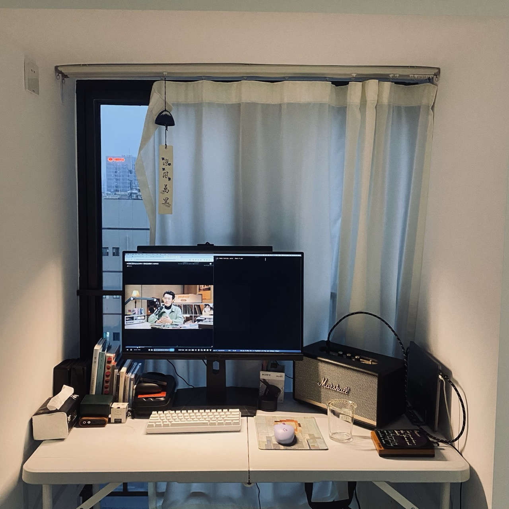
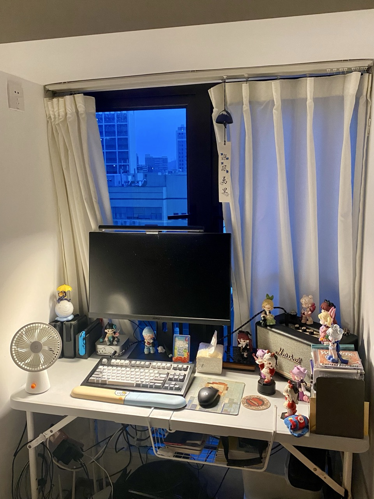
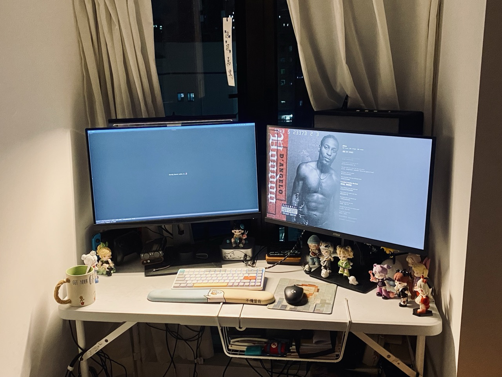
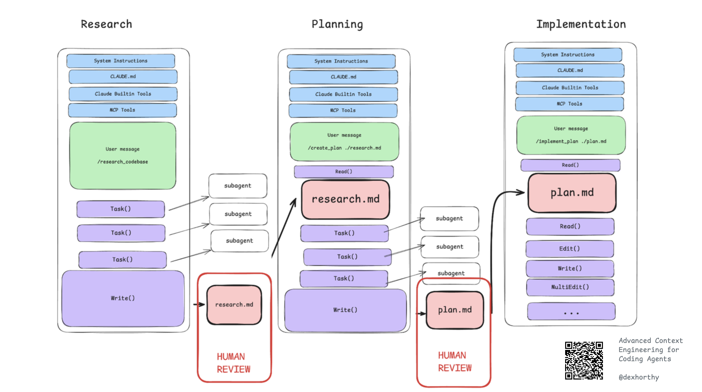
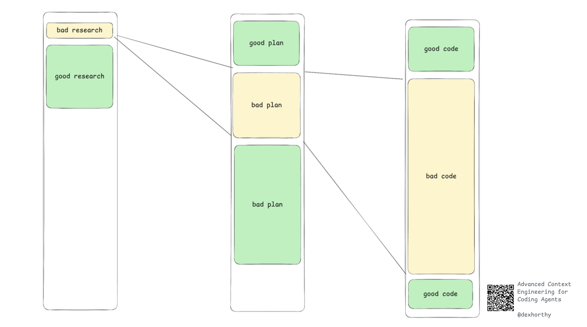

Zine#43
桌面变形记
🎶 Voodoo - D'Angelo
最近把闲置的显示器拿出来用，把桌面整理了一下，顺便分享一下我的桌面变化吧。
两个显示器都是 MSI 的 2K 显示器，我用着很满意，够大， 看久了眼睛也不会很累。
{kind=link}
{kind=link}

{kind=link}

{kind=link}

如果你对图片里的键盘感兴趣，请移步 我的键盘。
最近还对博客做了一些更新，感兴趣可以看看 CHANGELOG。
News | Article
How I, a non-developer, read the tutorial you, a developer, wrote for me, a beginner by annie
anine 写了一个教程，讽刺了一些面向初学者的教程 ⸺ 这些教程充斥着一堆初学者看不懂的术语，即使按照教程也很难跑通。
我也碰到过这样的教程，就会有种「字我都能看懂，但组合在一起我就看不懂」的感觉，让人摸不着头脑。
Just Let Me Select Text by Artyom Bologov
有的应用中的文字会故意做成不让你选择复制，可能是想防止内容被抓取，但实际上要抓取还是能绕过的，只是稍微麻烦点，为难了用户，但阻止不了别有用心的人。
禁止文本的选择，相当于把文本变成了图片，也失去了文本诸多便利，例如将其复制后翻译、搜索。
When I say “alphabetical order”, I mean “alphabetical order” by Sebastiano Tronto
按照字母顺序排序， file-9.txt 和 file-10.txt 哪个在前哪个在后？
揭晓答案
如果严格按照字母顺序排序， file- 这部分都是相同的，顺序取决于下一位，由于 1 比 9 小，所以顺序是：
file-10.txtfile-9.txt
但是你会发现在很多程序里，顺序是：
file-9.txtfile-10.txt
因为这些程序觉得用户理解不了字母排序的含义，如果排序的某个部分是数字，它们会当作整体来排序，由于 9 小于 10，所以 file-9.txt 就排在了前面。
Write plain text files by Derek Sivers
Derek Sivers 建议用纯文本文件记录各种信息，文章例举了纯文本的各种好处。
可靠、灵活、便携、独立、持久。纯文本文件将能被未来几代人阅读，即使是数百年后。
我尤其喜欢它们离线、非商业性质的宁静。它们是安静的。它们是专注的。（正如我所追求的。）
Free Software hasn't won by Dorota
自由软件还未成功，用户自由只在软件的 四大自由 被维护时存在：
- 0: 为任何目的运行程序的自由，
- 1: 研究和修改它的自由，
- 2: 分享其副本的自由，
- 3: 改进它并分享改进。
为什么自由软件很重要？
[…]你看，心脏起搏器是一种复杂的设备，它必须持续、实时地检查和诊断病人，才能发挥其功能。它的任务是检测危险状况并相应地执行医疗程序。它需要软件来完成这项复杂的任务。但如果设备在诊断方面不够完美，那将是一个大问题。我不是医学专家，但心脏在不必要时受到电击听起来本身就很危险。当它运行不授予我们修改自由的封闭软件时，我们只能乞求制造商修复它。而当我们没有研究它的自由时，我们甚至无法避免导致它误触的情况！
但不要只听我的一面之词。我之所以知道这个问题，是因为凯伦·桑德勒，她从一开始就与自由软件的这个问题纠缠不清。
归根结底，如果人们别无选择，只能将自己的身体托付给一段闭源软件和一个单一制造商，我们又怎能说开源已经胜利了呢？
Open Social by dan abramov
文章阐述了开放社交 (Open Social) 的理念以及其背后的技术 AT Protocol1。
社交平台之前，人们通过自己的个人网站进行交流，数据归个人所有；
社交平台出现后，人们都涌入到社交平台，但此时数据是归社交平台的，用户只有使用权，人们被困在了一个一个信息孤岛里。
社交聚合功能彻底颠覆了「个人网站」的范式。人类是社交动物，我们渴望在共享空间中聚集。我们不仅想访问彼此的网站 ⸺ 更希望共同参与互动，而社交应用恰恰提供了这种共享基础设施。通知、信息流和搜索等社交聚合功能，已成为现代社交产品不可或不可或缺的核心要素。
而开放社交就是要解决这个问题，让数据回到用户手上，用户可以授权平台访问个人数据，依然享受社交平台的好处。
像开源一样，它可能需要几十年的时间才能普及。通过在这里解释这些想法，我希望能够稍微推动这个时间线。尽管当今的社交媒体公司掌控着一切，但我相信开放社交最终会像现在的开源一样，在回顾时显得不可避免。美好的事情会发生；所需要的只是一个由固执的爱好者组成的社区多年来的持续努力。
[…]
What open source did for code, open social does for data.
How I Almost Got Hacked By A 'Job Interview' by David Dodda
面试官给作者一个测试项目，让其测试，但其中藏了恶意代码，一旦执行就会窃取加密钱包。所幸，作者有个习惯，在执行前让 AI 检查一下代码，而 AI 发现了问题。
这种诈骗行为针对性很强，隐蔽性也很强，一个大意可能就上当了。 NPM 上也经常出现供应链投毒事件。感觉信任危机是越来越严重了，谁也信不得。
Sidenotes In Web Design by Gwern
文章介绍了旁注 (Sidenotes)，分析了很多网站的旁注实现，很翔实的文章，Gwern 的旁注也是我目前见过的最好的旁注实现。
我的博客也实现了旁注，如果你屏幕比较宽的话会看到，虽然比不上 Gwern 博客中的实现，但目前也够用了。
Gwern 博客设计 得非常好，功能丰富，很多细节，值得学习。唯一的缺点就是内容太丰富，有点眼花缭乱。
I am sorry, but everyone is getting syntax highlighting wrong by Niki
代码一般都会有语法高亮，但往往颜色都很多，高亮的部分也很多。如果所有内容都被高亮，那么实际上没有任何内容被高亮了。
作者讲述应该如何高亮才比较好，对于代码高亮、代码主题设计或许有所启发。
Birth of Prettier by vjeux
Prettier 十周年，作者写了篇博客分享了 Prettier 是如何诞生的。
摘录
学到的一个好经验是，可以直接给这些作者发陌生邮件。他们花了几个月的时间在这上面，所以当有人联系他们讨论这个话题时，他们都非常高兴。
与许多人交流后，得出的结论是，我们面临的是一个截然不同的项目类型。大多数编程项目都遵循帕累托曲线，即你可以在 20% 的时间内完成 80% 的项目，然后发布并迭代以改进最后的 20%。
但格式化工具的问题在于，如果它只有 80% 的时间能做对事情，你就无法发布。这意味着每隔五行代码，它就会以一种奇怪的方式格式化。人们对代码的编写方式非常敏感，所以这种情况是行不通的。
在六个月内，我提交了 500 次提交，大约每天 3 次。开源的奇妙之处在于，在此期间我只完成了项目一半的提交！其他 31 个人贡献并构建了许多我可能无法完成的东西。
我完全低估了 「保存时格式化」 功能所产生的深远影响。我曾认为它只是一个锦上添花的功能，但最终它却成为了这个项目的决定性因素。
当时程序员的心态是，你编写的代码大部分是格式化好的，然后会有一个烦人的 Linter 告诉你所有这些错误，你需要花时间去纠正。
一开始，人们对 Prettier 也做着同样的事情，并且由于 Prettier 会修复这些问题，生产力略有提高。但后来人们意识到，他们可以随意编写代码，然后按下保存键，代码就会自动格式化。
挑战在于没有明确的价值主张。世界的运作方式是你花钱换取某种东西。由于 Prettier 本身是免费的，人们不会为此付费。
My most popular application by Fatih Altinok
作者为患有慢性病的女朋友写的一个日历应用，便于她跟踪她的症状和药物。
为自己认识和关心的人编写软件是一种很棒的实践，就像是 Zine#43::My product is my garden by Herman Martinus 说的，因为规模小，很容易感受到其中的连结，感受到乐趣。
不妨试试给身边的人编写软件，解决他们的痛点。
An Existential Guide to: Making Friends by The Shadowed Archive
文章分享的一些交朋友的小技巧我觉得蛮有用的，推荐一看。
友谊不会自然而来，需要主动出击；保持友谊也是需要付出的，不然时间久了也会变淡。
摘录
首先你要明白，友谊并非与生俱来。若真顺应天性，你该是苔藓。苔藓没有朋友。它们只是蔓延，冰冷潮湿又漠然，偶尔另一片苔藓在旁生长，共同化作沼泽，然后沼泽吞没一匹马。但可悲的是，你并非苔藓。你是人，而人类这种生物，独处就会腐朽。为人即是一种需要见证者的动物。总得有人看你吃麦片。总得有人在你讲冷笑话时在场。否则你会开始在公共场合抽搐，在超市里低吼。你会开始培养古怪嗜好。这就是我们称之为孤独的恐怖。
去双手忙碌的地方。
酒吧是言语的博物馆，工坊是友谊的工厂。把自己放在物品会抵抗你的地方。陶艺课、社区菜园、罢工线、合唱排练、施粥处、那个地下城主明显权力欲爆棚的龙与地下城桌游局 ⸺ 任何能让第三物（泥土、歌声、热汤、骰子）像亲切的监护人般隔在你与他人之间的地方。你们无法通过凝视彼此变得亲近；只有当共同注视着别的东西时，才可能意外成为共谋者。
制定具体到愚蠢的计划。
「改天一起玩」简直是地狱版世界语。试试这样说：「周二晚上 7 点 15 分，那家闻起来像湿狗肉味的饺子馆」。给对方一个明确的时间窗口。承诺只喝一杯酒、只绕公园走一圈、只互相吐槽一小时。灵魂不会因命令而敞开，只会在倒计时保护下缓缓开启。
带上见面礼。
一个蜜橘。一首复印的诗。存着罗马尼亚迪斯科音乐的诅咒 U 盘。礼物传达的是：我去过别处，却想起了你。别过度纠结礼物本身。重点不在于价值，而在于证明你曾为之动念。
请求一个小忙。
不是金钱，也不是肾脏。「我去小便时能帮我看下自行车吗？」 ⸺ 本杰明·富兰克林效应的温柔版：让人在微小尺度上练习照顾你。若对方做得好，逐步升级：「帮我搬沙发」，「教我弹这个和弦」，「陪我去看牙医以防我临阵脱逃」。
容忍没有镜头记录的时刻。
友谊多半是日常琐碎。跑腿办事，等公交车，一起迷路。若每次相聚都需要高光时刻，你是在与奇观(spectacle)约会，而非与人相处。共享沉默时，不必急着用镁元素的知识填补空白。若能一起无聊，便能一起鲜活。
练习不对等的付出而不记账。
你会经常主动发消息。之后他们也会。然后又是你。如果记着账本，那你是个审计员，而非朋友。宇宙本就不平衡；善意才需要平衡。
做一面小镜子，而非全身镜。
反射一些光芒，不要扮演对方。保持你的本色。友谊不是融合，而是编织。让差异在接触中存活：他们的足球；你的中世纪异端学说；他们的塔罗牌；你的动物标本。目标不是成为一个人的两半，而是两个完整的人围绕着不属于任何人的第三事物旋转。
受伤时直言不讳；愤怒时言简意赅。
干净的伤口会愈合；做作的伤口会形成习惯。指明具体的过错，提出细微的补救，别把谈话记录群发给所有人。道歉该用名词（「我太刻薄了」），而非天气报告式措辞（「有些话被说了出来」）。
A clean wound heals; a theatrical wound becomes a career.
Name the specific sin, propose the small repair, and do not forward the minutes to the group chat. Apologies should be nouns (“I was cruel”), not weather reports (“things were said”).
别盘问；去观察。
问卷调查会扼杀温血动物。得了吧！不如留意：他们如何对待服务生，如何议论不在场的人，当蹒跚学步的孩童经过时是否挪开椅子。你是在为世界末日挑选共同见证者。以温柔为标准选择。
让手机成为桥梁，而非房屋。
私信约散步时间。发张狗狗照片来。别像绦虫一样赖在群里不走。群聊是堆肥坑：扔点零碎进去，说不定能长出南瓜。
先袒露一处脆弱，而非倾泻所有。
说句真心话：「我讨厌派对，因为我会变成木头人」。 (I hate parties because I turn into a statue.) 看对方是否为此披上外套（接话）。如果有，下一句或许能更深入。切忌初次见面就倒苦水；也别用索取关怀来验证友情。
做那个发起聚会的人。
每个人都疲惫不堪。每个人都暗自期盼有人能敲响门铃。操办那场寒酸的聚会。定下时间并收尾。说一句「门虚掩着，想走随时」。把薯片倒进碗里。友谊不过是温柔执行的琐碎后勤。
故意输掉一些。
你会判断失误。他们也会误解你。有时化学实验会在烧杯里冒出些许烟雾，留下褐色焦痕。请克制住追根究底的冲动。祝他们安好，然后继续前行。将失望化作养料，终会孕育出意想不到的新生。
学会让人找到你。
这是最困难的部分。被找到意味着在公共空间留有踪迹：固定的座位、常走的路径、社区公告栏上你手写的字迹。它代表着用明确的回应答复邀约，而非模糊的托辞。它意味着一扇随时敞开的门。
记住这些生活哲理(metaphysics)。
朋友不是通讯录里的一个联系人，不是治愈良方，也不是密室逃脱的玩伴。朋友是那个在你视线模糊时，证明你真实存在的人。朋友是每一天微小审判中的见证者。你们共同构建起一个能推翻世界法则的专属法庭。
如果你还需要最后一到催化剂 (one final mechanism)，一个简单直接甚至有些傻气的法子，那就试试这个：打开手机，给你最接近朋友的那个人发消息。不必是最完美的人选，就找身边那个。输入：「6 点 40 分散步？戴上那顶傻帽子。」趁你的胆怯还没苏醒，赶紧发送。
剩下的只是重复，温柔而固执。剩下的只是照料。你不是苔藓；你是独自腐朽的动物。与他人共建泥沼。救下那匹马。
Getting Jacked is Simple by Dylan
练就一身肌肉并不容易，但原理很简单，只需要付出时间和精力就能成功。
练就一身肌肉 = 时间 * (0.6x + 0.3y + 0.1z)
- 时间
- 别忽略最前面的 时间 。包括每一次训练的时间，需要持续足够的时间；也需要保持一定的频率进行锻炼，每周只锻炼一次显然是不够的。
- x 表示主要概念
渐进式超负荷
如果你一直待在舒适圈，不增加负重，那肌肉也会停留在它的舒适圈。
练到力竭
以前我弟带着我锻炼时，他常说的一句话就是「One more」。当你觉得自己没有力气的时候，尝试再逼自己一下，再做一个，做到力竭。不过也要注意安全。
- 摄入充足的蛋白质
- 降低体脂
- y 表示次要概念
专注于复合动作
复合动作是指能同时锻炼到多个肌群的动作。仅需掌握五项动作（深蹲、硬拉、卧推、推举和引体向上），即可锻炼所有主要肌群。
- 优化每周训练组数
- 遵循力量训练计划
- z 表示第三级概念
- 重复次数区间
- 混合训练
- 加入孤立训练
- 补剂
私教/健身课程
私人教练确实能帮上忙。但他们并没有什么练出肌肉的独门秘方。他们的价值在于激励你、督促你坚持，并帮你养成健康习惯。
Cool Bit
I'm Not a Robot
层层递进的验证码挑战，可以看看能通过几关。
我玩到了 level11，找 Waldo，需要你在大量人物中找到他。我甚至都不知道 Waldo 是啥，查了一下才知道是一个角色，但是验证码里具体的判断是怎样的我也不太清楚。
level7 找文字的我也花了不少时间，提示是找到所有的 STOP SIGN and BIKE ，我以为还需要找到 and ，后来才明白并不需要。
level7 和 level11 都需要时间和耐心，或许能有效拦截机器人，但我也会阻挡很多人类访问者吧，反正我是不愿意花这个时间。
snake
在浏览器的地址栏上玩贪吃蛇。
We Move As One

有点像推箱子的游戏，通过方向键控制多个物体的一起移动，将这些物体一个个消除。
meow.camera

猫猫干饭吃播。
Root System Drawings | Wageningen University & Research
植物根茎图片。

Weird Web October
从 kaylee rowena 的 weird web october 中了解到了这个活动。
Weird Web October是一项挑战，旨在鼓励人们在十月的每一天都尝试制作一个网站，并以每天的主题为灵感，其灵感来源于 Inktober。这项挑战对你和所有人开放！
kaylee rowena 最新的 camera 实现很有趣，她做了一个页面，里面是一个拍立得相机，当你向下滚动时就会有一张图片从拍立得中弹出，再慢慢显现。
如果以后我要做一个简单的图片库，我会抄一下这个实现。她的实现里，图片的呈现是要点击的，我觉得或许可以利用 Intersection Observer API 判断图片弹出了相机，然后自动显现。
Roundup – October 2020 by Weiwei Xu
这个页面的呈现方式蛮有趣的。
看了一下页面源码，整体是由 3 张图片组成的。
关于破解加拿大航空飞机网络限制的一件小事 by Ramsay
蛮有趣的故事，Cool~
孙燕姿的部落格
惊了，孙燕姿原来有博客，喜欢的歌手都有博客就好了。
Tutorial | Resource
Web Browser Engineering by Pavel Panchekha & Chris Harrelson
教你用 python3 实现一个基本的浏览器。
本书的第 1-3 部分构建了一个基本的浏览器，代码量约为 1000 行，完成练习后约为 2000 行。对于具有几年编程经验的人来说，平均每章需要 4-6 小时来阅读、实现和调试。本书的第 4 部分涵盖了高级主题；这些章节更长，代码更多。最终的浏览器代码量约为 3000 行。
The Software Essays that Shaped Me by Michael Lynch
作者整理的一些对他深有影响的软件文章。
How modern browsers work - A web developer guide to browser internals by Addy Osmani
文章相当详尽地描述了浏览器的工作原理。
Measuring Engineering Productivity by Can Duruk
作者整理了一套他用于评估工程生产力的方法。
有点像是日报、周报、周会、周全体大会那套东西。
关键还是执行人的理念是什么：
我希望你从中学到的是：衡量不是敌人。糟糕的衡量才是敌人。
当你衡量错误的东西 ⸺ 代码行数、提交次数、工作时长 ⸺ 你就会制造功能障碍。当你用测量开销来给工程师增加负担时，你非但没有提高生产力，反而降低了生产力，并制造了敌人。当你将指标作为惩罚他人的武器时，你就会摧毁信任。
但是，当你深思熟虑地进行衡量，尊重人们的时间，并侧重于可见性而非控制时，衡量就会变得有价值。它能帮助你看到实际发生的情况。它能帮助你及早发现问题。它能帮助你理解模式并随着时间的推移而改进。它能帮助你，也能帮助那些被衡量的人。
这个系统应该为你的工程师服务，而不是与他们作对。如果你的衡量系统降低了工程师的生产力，你就失败了。如果它让他们感到被监视和不被信任，你就失败了。如果它本身成为目的，而不是构建更好产品的手段，你就失败了。
建立一个系统，既能让你了解情况，又能让工程师专注于他们最擅长的事情：工程。这就是目标。其他都是细节。
Scroll-driven Animations
A bunch of demos and tools to show off Scroll-driven Animations.
Code Related
A pragmatic guide to modern CSS colours - part one by Kevin Powell
一些关于 CSS 颜色的介绍，如 rgb 语法的更新、相对颜色、明暗主题等。
Using container scroll-state queries | MDN
html { container-type: scroll-state; container-name: scroller; } @container scroller scroll-state(scrollable: top) { .back-to-top { translate: 0 0; } }
设置 container-type: scroll-state; 可以判断一个容器是否可滚动，上面的代码做的事情，就是判断 html 是否可以向顶部滚动（或者说滚动条向下滚动过），当可以向上滚动时，则显示一个 .back-to-top 元素。
我在 Album#5 里应用了这个技巧，当屏幕宽度很小，还可以向左滚动时，会出现一个提示符号。不过目前 Safari 还不支持这个特性。

HTML dialog: Getting accessibility and UX right by Jared Cunha
一些关于 <dialog> 用户体验优化技巧。
How to Fix Any Bug by dan abramov
文章记录了作者用 Claude 定位和修复一个 React Router 中的 bug 的过程。
HTML’s Best Kept Secret: The <output> Tag by Den Odell
文章介绍了 <output>，一个用于呈现计算结果或用户操作的结果的元素。
一个应用场景是，基于用户输入的密码，显示其密码强度。
Let’s Be Specific: CSS Specificity Explained by Courtney Hackshaw
CSS 选择器权重解释，通俗易懂的文章。
Frontend complexity and the HTML renaissance by Ollie Williams
文章介绍了一些 HTML 引入的新功能，虽然这些改进单独来看可能算不上革命性，但整体而言，它们预示着未来第三方 JavaScript 组件将不再那么必要。
「是时候让开发者重新发现 HTML 和 CSS 的强大之处了。」
Using environment variables by MDN
CSS 环境变量是全局变量；它们在整个文档中都是全局作用域的。它们由用户代理定义。环境变量是浏览器或操作系统提供的特殊值，可帮助您的样式适应用户的设备或上下文。它们使用 env() 函数访问。
环境变量的工作方式与自定义属性和 var() 函数类似，但它们是全局定义和作用域的。这意味着它们始终作用域于整个文档，这与作用域于元素的自定义属性不同。此外，环境变量是只读的，而自定义属性是可变的。
例如可以获取虚拟键盘的尺寸和位置，从而适配键盘弹出时的样式。
Just use cURL
它已被下载超过 200 亿次。它支持 25 种以上的协议。它存在于汽车、冰箱、电视机、路由器、打印机、手机以及地球上每一个该死的服务器中。它由真正懂网络的人维护，而不是那些下个季度就会给产品贴上「AI」标签的风险投资初创公司。
别再使用那些占用资源的垃圾了。别再为了基本功能而创建账户了。别再假装你需要一个图形用户界面来发送 HTTP 请求了。
就用 cURL。
cURL 也能完成很多 Postman 的功能，或许下次你要下 Postman 之前，可以试试 cURL，它就在你的命令行里。
Transition to the Other Side with Container Query Units by Ryan Mulligan
一个元素，尺寸是动态的，在父容器中移动到一个指定位置，你会怎么做？
文章提供了一种用容器查询实现的，比较简单通用的方法。
Front-end maximalism by Nate Meyvis
这是一个经常出现的问题：
问：我有一个前端调用后端的系统。它现在需要做一些事情，以后可能需要做更多事情。后端在将数据传递给前端之前，应该做多少过滤和预处理？
这是我喜欢的一个答案：
答：尽可能少。
前端最大化主义，是指尽可能将多的数据交给前端，由前端完成更多的处理。这样带来的好处是：减少了 API 调用；加快用户体验速度；前端拥有更多数据也能做更多的事情。
例如有一个列表数据，如果依赖后端分页获取数据，则搜索、分页都需要调用 API，如果网络差可能还要等一会儿。如果这些数据量不是特别大，一次性返回给前端，前端做过滤和分页，会比调用 API 快得多，用户体验上也会更好。
Understanding Focus Indicators for Web Accessibility by Team A11Y Collective
当使用键盘 tab 移动焦点的时候，被聚焦的元素应该有一个样式，让人知道它被聚焦。
文章分享了应该如何设计这个聚焦提示的样式，最基本的样式是：
:focus-visible {
/* 至少 2px 的宽度，太小了看不见；颜色要有足够的对比度 */
outline: 2px solid #0174FE;
/* 避免和内容贴的太近 */
outline-offset: 2px;
}
CSS Boilerplate
文章介绍了一种 CSS 模板，主要用到 @layer，可以了解一下 @layer 的使用。
What You Need to Know about Modern CSS (2025 Edition) by Chris Coyier
看看 2025 年 CSS 的发展，跟上脚步。
A complete guide to HTTP caching by Jono Alderson
一篇关于 HTTP 缓存的详尽介绍。
Styling siblings with CSS has never been easier. Experimenting with sibling-count and sibling-index by Brecht
关于 sibling-index() 和 sibling-count() 的介绍和一些用例。
- sibling-index()
- 返回元素在所有相邻元素中的位置下标，从 1 开始计算
- sibling-count()
- 返回相邻元素的数量，自身也包括在内
How much do you really know about media queries? by Daniel Schwarz
文章介绍了很多可能用的不多的媒体查询描述符，了解一下，或许某天想起来能用到。
例如：
/* 主要输入设备是操纵杆 */ @media (hover: hover) and (pointer: coarse) { ... } /* 主要输入设备是触控笔 */ @media (hover: none) and (pointer: fine) { ... }
还可以用 width >= 500px 替代 min-width: 500px ，我觉得前者更容易理解，后者有时还得想一想是什么意思。
CSS :is() :where() the Magic Happens by Matthias Ott
AI Related
Vibe engineering by Simon Willison
Simon Willison 提出了 Vibe engineering 的概念。
简单来说，毫无章法地用 AI 编程的叫 Vibe Coding。
运用软件工程实践，更高效地运用 AI 编程的，叫 Vibe engineering。
The AI coding trap by Chris Loy
作者将 LLM 看作一个初级工程师，而使用它的人是技术负责人（Tech Lead）。
技术负责人带团队，常见有两种策略：
- 让初级工程师做简单的工作，困难的事情自己拦过来做。好处是项目开发会比较快，缺点是团队成长少，最后可能也会产生倦怠。
- 尽可能让初级工程师承担更多、做更具挑战的任务，让团队在这个过程中成长。缺点是项目进度取决于最慢的那个人。
类比到 LLM 的使用，也有两种路径：
- vibe coding，毫无章法地让 LLM 干活，不顾一切地快速实现，虽然前期比较快，但规模上来后就容易碰壁，很难前进。
- vibe engineering / AI-driven engineering，采用最佳实践，突出人类对代码的理解，循序渐进地使开发可持续。
要想让 LLM 发挥最大作用，就需要运用最佳工程实践，而不是毫无章法地蛮干。
摘录
当我担任 Datasine 首席技术官时，我们将这种态度融入了一个简单的技术团队座右铭：
学习。交付。乐在其中。
优秀的科技主管会让他们的工程师在能力极限下工作，通过流程和实践来最大限度地降低交付风险，同时也能让每个团队成员提升技能、知识和领域专长。这实际上是优秀技术领导力的精髓。
(文章里那些示意图都画的很直观)
Getting AI to Work in Complex Codebases by dexhorthy
文章分享了如何高效利用 LLM 编程的方法，关键还是上下文管理。
上下文是有限的，而模型的输出都取决于输入给它的上下文。
正如我们在 12-Factor Agents 代理中深入探讨的那样，大型语言模型是无状态函数。影响输出质量的唯一因素（在不训练/调整模型本身的情况下）是输入质量。
这对于使用编码代理来说是如此，对于通用代理设计也是如此，只不过你的问题空间更小，我们谈论的是使用代理，而不是构建代理。
在任何给定时刻，像 Claude Code 这样的代理中的一个回合都是一个无状态函数调用。上下文窗口输入，下一步输出。
也就是说，上下文窗口的内容是影响输出质量的唯一杠杆。所以，是的，这值得我们深思熟虑。
您应该优化您的上下文窗口以实现：
- 正确性
- 完整性
- 大小
- 轨迹
换句话说，您的上下文窗口可能发生的最糟糕的事情，按顺序排列，是：
- 不正确的信息
- 缺失的信息
- 太多噪音
哪怕上下文足够大，大到可以容纳你输入的一切，也依然要管理上下文，减少不正确的信息和噪音。
文章中提到的一个管理上下文的技巧是「频繁的有意压缩」(Frequent Intentional Compaction)，即在对话的某个阶段，让模型将目前讨论的内容，按照某个格式输出到一个文件中，将大量上下文压缩成关键信息，保存在一个文件中，之后再将这个文件作为上下文的一部分，开启新的讨论。
{kind=link}

若要从这段经历中汲取一点启示，那便是：
一行糟糕的代码…终究只是一行糟糕的代码。但计划中的一个错误决策可能导致数百行劣质代码。而研究方向的偏差、对代码库运作机制或功能模块定位的误解，则可能引发成千上万行问题代码。

图10 LLM 开发分成多个阶段，上一阶段的上下文会用于下一阶段， 一旦最初阶段出现了严重错误，错误就会在后续阶段不断放大，产生很多糟糕的代码。
{kind=link}
另外代码审查也很重要，目的是让团队成员保持一致认识、快速了解代码库中不熟悉的部分。
关于代码审查部分的摘录
人们对代码审查的目的有很多不同意见。
我更赞同 Blake Smith's framing in Code Review Essentials for Software Teams 中的表述，他认为代码审查最重要的部分是心理上的一致性 ⸺ 让团队成员对代码如何变化以及为什么这样变化保持共识。
还记得那些 2k 行的 golang PR 吗？我关心的是它们的正确性和良好设计，但团队内部最大的不安与挫败感来源于缺乏心理上的一致性。我开始对我们的产品是什么以及它如何工作失去把握。
我认为，任何与高效 AI 编码器一起工作过的人，都会有过这种体验。
对我们来说，这实际上是研究/计划/实施流程中最重要的部分。一个必然的副作用是每个人都会交付更多代码，这会导致在任何时间点，对任何工程师来说，你代码库中更大比例的代码变得不熟悉。
我不会试图说服你研究/计划/实施对大多数团队就是正确的方法 ⸺ 它很可能不是。但你绝对需要一个工程流程，能够在关键点由人类进行评审和决策。
- 让团队成员保持一致认识- 使团队成员能够快速了解代码库中不熟悉的部分
对于大多数团队来说，这是 pull requests (PR) 和内部文档。对于我们，现在是规格、计划和研究。
我无法每天阅读 2000 行 golang。但我可以阅读 200 行写得很好的实现计划。
当某个东西坏了，我不能（好吧，我可以，但我不想）花上一个多小时去在 40 多个守护进程文件里探险式查找。我可以引导一个 research prompt 给我速查指南，告诉我应该在哪儿查以及为什么。
The Programmer Identity Crisis by Simon Højberg
作者对于 LLM 的一些看法，整体来说，他是反感 LLM 的。
摘录
一本书的评论或概要永远无法替代亲自阅读的体验：在细细品味每一句话的过程中，花上数小时甚至数百页来反复思考书中的观点。同样地，浏览已完成的 AI 任务总结会剥夺我们对领域、问题和可能解决方案形成深刻理解的机会；它剥夺了与代码库建立联系的可能。勇敢跳入无知的深渊以揭示、学习并理解某个主题及其影响，既令人满足又对编写优良软件至关重要。责任感、主动性以及深度且充实的工作已被在多个代理标签页之间分散的注意力所取代。
良好的设计源自沉浸。源自浸泡。源自在文本缓冲区中来回打磨的工作，常常也离开键盘进行思考。不可能把整个代码库都装进脑子里。我们必须潜入各个模块、类和函数，以把模糊的心智模型磨得更清晰。读代码并写代码，以扩展我们的认知，重新获得对问题领域的熟悉感和理解。
一旦勉强有了点上下文感知，经过大量糟糕的尝试，我们终于能发现解决方案。糟糕设计的刺耳不和谐得被感受到：只有当我们编写令人厌恶且重复的代码时，才会意识到存在一种更好、更简洁、更优雅、更具组合性和可重用的方式。它令人停顿。退一步，深入思考问题。重新开始。反复洗练。与此截然相反，AI 代理的工作是无摩擦的；我们会回避替代方案，也无法知道我们接受的东西是完美的、平庸的、糟糕的，甚至是有害的。质量通过反复迭代来打造 ⸺ 如果我们从未探索令人反感的方案，又怎能设想出优秀的设计？
onevcat AI 使用经验
- 一个半月高强度 Claude Code 使用后感受 by onevcat
- Magpie 和 「AI 贼船」- 再谈 vibe coding，当代码变得廉价时… by onevcat
Agents 2.0: From Shallow Loops to Deep Agents by Philipp
Agents 1.0 2
设置一个 while 循环，接收用户提示，将其发送给 LLM，解析工具调用，执行工具，将结果发回，然后重复。
存在问题：
- 上下文溢出
- 目标丢失
- 无恢复机制
Agents 2.0

在 Agents 1.0 的基础上，增加:
- 显式规划
- 分层托管（子代理）
- 持久记忆
- 极致上下文工程
Just Talk To It - the no-bs Way of Agentic Engineering by Peter Steinberger
Peter Steinberger 使用 agents 的经验，他主要用的是 Codex，文中也有一些和 Claude Code 的对比。
重点还是上下文管理。
他目前一个月的 订阅成本是 1000 美元。
摘录
每当我工作时，我都会考虑「爆炸半径」(Blast Radius)。这个词不是我发明的，但我确实很喜欢它。当我考虑一个改动时，我能很好地预估它需要多长时间以及会触及多少文件。我可以向我的代码库投掷许多小炸弹，或者一个「胖子」炸弹和几个小炸弹。如果你投掷多个大炸弹，将不可能进行隔离提交，如果出现问题，重置也会困难得多。
这也是我观察我的代理时的一个很好的指标。如果某件事花费的时间比我预期的要长，我就会按下 Esc 键，然后问「状态如何」以获取状态更新，然后要么帮助模型找到正确的方向，要么中止，要么继续。不要害怕中途停止模型，文件更改是原子性的，它们非常擅长从停止的地方继续。
当我不确定影响时，我使用「在进行更改之前给我几个选项」来衡量它。
要求模型保留你的意图，并 「在棘手部分添加代码注释」，这有助于你和未来的模型运行。
当事情变得困难时，通过提示并添加一些触发词，如 「慢慢来」(take your time)、「全面」(comprehensive)、「阅读所有可能相关的代码」(read all code that could be related)、「创建可能的假设」(create possible hypothesis)，可以使 Codex 解决最棘手的问题。
不要把时间浪费在 RAG、子代理、Agents 2.0 或其他大多只是空架子的东西上。直接和它对话。和它玩。培养直觉。你使用代理的次数越多，你的结果就会越好。
Simon Willison 的文章提出了一个绝妙的观点 ⸺ 管理代理所需的许多技能与 管理工程师 所需的技能相似 ⸺ 这些几乎都是高级软件工程师的特质。
是的，编写好的软件仍然很难。我不再编写代码，这并不意味着我不再认真思考架构、系统设计、依赖关系、功能或如何取悦用户。使用人工智能只是意味着对交付成果的期望提高了。
Superpowers: How I'm using coding agents in October 2025 by Jesse Vincent
技能 (Skills) 才是最有趣的部分。在不久的将来，你将从 ⸺ 几乎所有人那里听到更多关于它们的消息。
技能赋予你的代理超能力。
Andrej Karpathy — AGI is still a decade away by Dwarkesh Patel
一个播客，采访了 Andrej Karpathy。
A small number of samples can poison LLMs of any size
这项研究代表了迄今为止最大规模的数据投毒调查，并揭示了一个令人担忧的发现：无论模型大小如何，投毒攻击所需的文档数量几乎是恒定的。在我们对高达 13B 参数模型的实验设置中，仅 250 份恶意文档（约 42 万个 token，占总训练 token 的 0.00016%）就足以成功地对模型进行后门攻击。
Tool | Library
- Tools 我最近新增的一个页面，放一些有时会用到的东西。
- VERT The next-generation file converter.Open source, fully local* and free forever.
Human-oriented Markup Language
HUML 是一种用于文档、数据集和配置的简单、严格的序列化语言。它强调为了人类可读性而保持严格的格式。它看起来像 YAML，但试图避免 YAML 的复杂性、歧义性和陷阱。
- jsonriver A simple, fast streaming JSON parser built on standards.
- Serialize JavaScript Serialize JavaScript to a superset of JSON that includes regular expressions and functions.
- globby User-friendly glob matching
- Odiff The fastest* (one-thread) pixel-by-pixel image difference tool in the world.
- Skia Canvas A multi-threaded, GPU-powered, 2D vector graphics environment for Node.js
- EmbedPDF A PDF viewer that seamlessly integrates with any JavaScript project
- ASCIIFlow A client-side only web based application for drawing ASCII diagrams.
Emacs
- Org mode 的 capture 怎么用好它
What is the point? | Zenie’s Qis
Emacs is a completely malleable world where anything is possible. The possibilities are always growing.
- My Morning Routine in Emacs | Andros Fenollosa
- Emacs For Writers Version 2 Has Arrived - Chris Maiorana
- Emacs: example of a custom Denote identifier to include day of week data | Protesilaos Stavrou
- An Obscure Emacs Package: Yankpad
- Democratize — Populate your help buffers with usage examples (Emacs package)
- phscroll - Enable partial horizontal scroll in Emacs
- Emacs Excitement by John Rakestraw
一些话 | 摘抄
A quote comes from Alfred D. Souza
For a long time it had seemed to me that life was about to begin—real life. But there was always some obstacle in the way, something to be got through first, some unfinished business, time still to be served, a debt to be paid. Then life would begin. At last it dawned on me that these obstacles were my life.
⸺ Alfred D’Souza
很长一段时间，我的生活看似马上就要开始了，真正的生活，但是总有一些阻碍阻拦着。有些事得先解决，有些工作待完成，时间貌似不够用，还有一笔债务要去付清，然后生活就会开始。最终我终于明白，这些障碍，正是我的生活。
⸺ 埃弗里德·德索萨
On writing regularly by Herman Martinus
同样，有些人认为写作是一种可以随心召唤的技艺，像神灯里的精灵，伴随一阵创意的绚烂闪现而出现。然而以我之见，写作更像铁匠的劳动，通过定期练习的热汗将文字锤炼成形。
[…]
多年来，我逐渐明白，坚持写作不仅对提升技艺至关重要，也有助于培养那只古怪又善变的生物 ⸺ 灵感。有时它像熟睡的龙一般沉寂无声；而有时，它会抓住我的后颈，把我拖入一场我从未意识到自己需要的冒险。无论哪种情况，我发现定期写作的行为，就像为灵感留下了一串面包屑，便于它找到我。
How To Understand Things by Nabeel S. Quresh
真正深入地理解事物与我们的物理直觉息息相关。简单的「基于文字」的理解只能达到一定程度。在三维空间中可视化事物，可以帮助你获得一个具体的「钩子」，你的大脑可以抓住并将其用作模型；理解因此有了一个可以「发生」的物理语境。
这就是为什么耶稣在新约中始终用比喻说话 ⸺ 这些比喻在你读完很久之后仍然记忆犹新 ⸺ 而不是仅仅陈述抽象的原则。「两只麻雀不是卖一分钱吗？然而，你们的父若不许，一只也不会掉在地上。」这句话能永远留在你心中，而「上帝看顾所有生灵」则不能。
Digital pollution by Derek Sivers
你不能只是在街上到处乱扔垃圾，让每个人都不得不爬过你堆积如山的垃圾才能继续生活，从而拖慢了他们的生活节奏。你会为此感到内疚，对吗？
我就是这样看待我们发布到世界上的数字产品：网站、应用程序和文件。
我更喜欢手动编写所有代码，因为我不喜欢自动化生成器制造的大量垃圾。这些为你生成网站、应用程序或文件的程序会吐出数千行不必要的垃圾，而实际上只需要 10 行。然后人们会疑惑为什么他们的网站如此缓慢，他们认为是手机或网络连接的问题。
My product is my garden by Herman Martinus
在封锁初期，我女朋友深深爱上了园艺。她会花几个小时照料她的番茄植株，除草、浇水、忙碌。她会花一下午阅读关于永续农业的文章，研究哪些植物能与哪些植物和谐共生。薰衣草与番茄能驱虫，西番莲藤需要些许遮荫，根茎蔬菜需要适量的水，但又不能太多。看着她亲手从地里培育出美味又营养的食物，真是令人愉悦。我无法想象大规模农业能有如此乐趣。
这就是我希望我的产品所能带来的。我希望能够忙碌其中，感受与过程的联结，并从中获得乐趣。我希望创造那些无法规模化的东西。看到人们沉浸其中并享受它们，将他们视为个体，而非数据。
Irrational Dedication
每一个看似轻松的成功背后，都隐藏着无数无形的挣扎：无休止的会议、自我怀疑以及濒临崩溃的时刻。
真正区分人们的，并非某种神奇的天赋，而是那种近乎不理性的执着，能够穿越常人无法承受的痛苦。
那家酒店并非必然存在。没有哪个成功是必然的。付出代价并不能保证成功。决心是必要的，但并非充分条件。你可能牺牲一切，最终仍然失败。世界上充满了被遗弃的尝试。
你周围的一切 ⸺ 你享受的每一项便利、你居住的每一个空间、你使用的每一项服务 ⸺ 都源于某个人拒绝接受世界本来的样子。
世界的进步源于无数非理性的奉献。
The thing about pressure by Seth Godin
家用压力锅的耗电量并不比火锅机高，速度也比不上微波炉。它依靠时间慢慢积累压力，最终以惊人的低耗能实现烹饪效果。
我们缺乏耐心，因此在有机会积累力量时未能持续积累，而当压力真正来临时，我们往往不堪重负。
一贯、渐进与持久，是文化变革中默默无闻的力量。
Uncomfortable/unspoken by Seth Godin
改善公共卫生和降低癌症发病率最简单的方法之一，就是提高结肠镜检查的普及率。这不需要任何科学突破，只需一场文化变革。
[…]
文化竭力维持其现状，而持续的社区行动能够改变我们的标准。
拒绝自我感动 by 和菜头
期待这件事从来都不是为了别人，而是为了自己。比如说望子成龙，重点不是成龙，而是自己成为龙父龙母。期待读者认可，期待读者关注，期待读者理解，期待的宾语是谁？我我我，从头到尾都是我。因为有这种期待，人就容易陷入自我感动，欺骗自己所做的一切都对他人有价值，都是帮助他人，成就他人，也都是为他人着想。
于是就有了失望，就有了委屈，就有了受伤。于是也就有了累了，倦了，厌了，不如算了，对人对事都很容易走到这一步。
千里投递菜场空降包 by 和菜头
无论是卤牛肉还是手打牛丸，都是地方风物。购买地方风物的最佳选择，那就是和当地人去一处买，他们吃什么，我晚一天吃什么。而且不在别处，就去当地菜市场。关于这一点，我有过教训。有天我馋四川的一些当地小吃，于是去淘宝搜索，选了一下销量最大，评分最高的店家下单。结果很不幸，到手之后完全不是那个味道。那一刻我猛然醒悟：
当地的著名小店小摊美味，服务一下本地人是足够的。要想覆盖全国，网上下单就能买到，势必要规模化生产。既然都规模化生产了，都能拿到蓝标了，那还谈什么风味？谈什么滋味？谈的只是高效、安全、可靠、稳定。小吃小食，只能是菜场直购。
闲鱼爱心卖家 by 和菜头
现在我在闲鱼上淘货，基本上都会选择那些毫无爱心，毫无奉献精神，纯粹以盈利为目的且肯定有利润空间存在的商家。因为我发现这些人守时守信，态度热情，服务周到，即便我只是偶尔抱怨几句，有问题立即会认，然后安排补偿方式 ⸺ 当然，也是「下次一定给您一个便宜」、「下次给你免费一样」那种，骗我继续和他们做生意。
和这种商家打交道我觉得很愉快，虽然感受不到他们对商品的热爱，感受不到他们对我的爱，但是我得到了我想要的商品，得到了良好的服务，就是一个信用级别极高的买家应该得到的那种服务。以至于我现在选择闲鱼商家的时候会先看一下个人简介，但凡出现「热爱」两个字的，「爱好者」三个字的，第一时间关闭页面走人。你们是热爱了，老登我却要因此而遭罪，你哪怕写个「热爱金钱」呢？我也多少有点信心。
烧掉一本书 by 和菜头
应该是博客时代的事情了，有一位读者为了表示对我的鄙夷，同时也是为了表达他强烈的情绪，在家里烧掉了我的一本书，然后把残骸扔进马桶，拍照发在网上。
看到那些照片的一瞬间，我感觉到一阵强烈的燥热从我的脚底一路烧上面庞。那种恶意不加掩饰，我能立即意识到照片后面羞辱我的意图。但也就我即将点燃的那一刻，我产生了另外一种奇异的感受：书是书，我是我，我并不是一本书。他买的书，他的私人物品，他怎么处置是他的事，和我无关。
Why I gave the world wide web away for free by Tim Berners-Lee
我相信，为用户提供如此简单的互联网导航方式，将会在全球范围内释放创造力和协作。如果你能把任何东西都放上去，那么过一段时间，上面就会应有尽有。
但要让万维网包罗万象，每个人都必须能够使用它，并且愿意使用它。这本身就要求很高了。我不能再要求他们为每次搜索或上传付费。因此，为了成功，它必须是免费的。这就是为什么在 1993 年，我说服我的欧洲核子研究组织经理们捐赠万维网的知识产权，将其置于公共领域。我们把万维网免费提供给了所有人。
The werewolf moment by Protesilaos Stavrou
我意识到我不应该待在房间里，直到我能把事情理顺。那样做只会加剧我的狭隘视野。相反，我决定尽可能多地外出冒险。借口是用我为此目的购买的傻瓜相机拍摄尽可能多的场景。我的旅行带我去了越来越远、越来越陌生的地方。我早上离开公寓，晚上回来，漫无目的地在城市和乡村中行走。就好像我在寻找某种无法描述，更不用说命名的东西。我迷失了，没有明显的办法改善我的处境，而我却不断地过度思考同样的问题，直到精疲力尽。实际上，我是一个行尸走肉。
另一个重大改变是在必要时变得强硬。最近的例子在我记忆中犹新。有一次我参加一个工作面试，被问到 「你为什么热衷于加入我们公司？」 。这是一种操纵策略，旨在迎合你内心深处的 「好孩子」 情结，这样他们就可以在任何时候肆无忌惮地利用你的忠诚和友谊。我以前就遇到过这种情况，老板假装是朋友，要求我无偿加班。我同意了，因为 「朋友就该如此」 ，结果最终却被抛弃。你要么有一个上司，要么有一个朋友。不能两者兼得。尤其是在商业有其自身逻辑而你又是可替代的时候。「听着，我正在找工作，而你正在提供一个；我不是来嫁给你的，而是来做生意的：我不会把热情带入其中。」这就是我的回答，然后我要求结束面试。
Lament by Hannah Arendt
Oh, the days, they waste away, like an unplayed game.
And the hours succumb to torment’s play
The time rises and falls
Slipping softly through me,
As I sing the old songs,
Knowing only the beginning.
And no child could follow her predestined path more dreamily
And no old man could know how long life is more certainly.
But sorrow will not silence
Old dreams or young wisdom.
Nor will it make me give up on
The beautiful pure joy of life.
See also: For the Love of the Word
Gall's law
一个能正常运作的复杂系统，总是从一个能正常运作的简单系统演变而来。
一个从零开始设计的复杂系统永远无法正常运作，也无法通过修补使其正常运作。
你必须从一个能正常运作的简单系统重新开始。
The Web’s Most Tolerated Feature by Mike Pennisi
首先，永远不要低估网络的力量。共识或许不是最高效的决策方式，但它能催生这个全球性编程平台所需的创新与包容的解决方案。其次，切勿基于专有技术进行构建。最好的情况是，你会固化孤立的功能；最坏的情况则是，当专利持有者改变主意或停止运营时，你将埋下失望的种子。
多媒体
书
-
陀思妥耶夫斯基的一本没完成的小说，讲述了涅朵奇卡三个人生阶段的故事。陀思妥耶夫斯基对于人物心理依然很精湛，以前还看过他的 卡拉马佐夫兄弟，也是很精彩，但也是没写完。尽管人物和故事不一样，但我觉得两本书那些细致的人物心理描写和分析、一些问题的讨论，风格是很相似的。
在没看之前，我是被封面的这句推荐的话勾起了兴趣，最后买了它：
王小波读完终生难忘：「我看了这本书，而且终生记住了前半部。我到现在还认为这是一本最好的书，顶得上大部头的名著。我觉得人们应该为了它永远纪念陀思妥耶夫斯基。」
电影
-
节奏、音乐、画面都还不错的电影，黑色幽默还蛮好笑，有一些昆汀电影的感觉。
视频
- 用《星际牛仔》的方式打开《丝之歌》 (01:38) 剪的真不错。
- 【郎朗大師課】《致愛麗絲》—— 一首人人都會彈，但沒人能彈好的曲子 (12:30)
- 一名职业钢琴家假装日本高中生闯入演唱比赛现场：太青春啦😭！看完之后感觉尸斑都淡了【补档】 (12:09)
陈绮贞给别人写的歌是什么水平？丨HOPICO (18:30)
如果把所有数值拉平，大家唱功一样、制作一样，我的面前摆着一张演唱型的歌手和一张创作歌手的专辑，我可能会毫不犹豫地选择创作歌手的那一张。是因为我们在聊的是一件事情，这件事情是「接近」⸺ 谁离这些文字和旋律更近。此刻我说的「接近」，是不需要揣测，不需要扮演，它是对每个字，每一个音符都了解，然后送到你的手里，你打开看到的一行字，上面写着「展信佳」。
（此时响起陈绮贞为杨乃文创作的 漂着，歌词是「你送给我的信/大部分我都看不懂」）
什么歌竟让椎名林檎和 ZARD 都翻唱过?！人生一歌第一集丨HOPICO (12:59)
Can't Take My Eyes From You 这首歌在之前推荐的 Album#1 - The Miseducation of Lauryn Hill 中也有翻唱。之前在家里放 Lauryn Hill 这张专辑时，播放到那段经典旋律，平时听歌不多的女朋友也问起了歌名，可见旋律相当让人喜欢。
最近喜欢听山下达郎，他也翻唱过：CAN’T TAKE MY EYES OFF YOU ～君の瞳に恋してる～ (Live)
周杨真的很会写文案！结尾这段我很喜欢：
当天听到了 Frankie Valli 和他的四季乐队，在他面前唱完了这首作品，然后他回到了电台，把这首歌加到了电台的播放列表当中，而当这首叫 Can't Take My Eyes From You 的歌第一次在电台里响起的时候，接下来的每一件事，都成为了这首歌 ⸺ 今天的历史。
此时响起歌曲的副歌： I love you, baby / And if it's quite alright…
- 許紹雄點解叫Benz雄？囡囡 Charmaine 事隔 7 年揸車同爸爸飲茶 (13:20) 哈哈哈，紧张死了。
- 殡葬区 up 和余华老师聊聊关于“生死” (27:52)
- Vite: The Documentary (39:14)
播客
- E075 决策：如何让你在复杂世界中过得更好 by 虚实之间 True Imagination (57 分钟)
- E084 错误：如何认识失败以及如何塑造自我 by 虚实之间 True Imagination (57 分钟)
- 遇到新敌人就说明路走对了 by Nice Try (100 分钟)
- 261-成为现象级的播客如何威胁我的人格？ by 独树不成林 (33 分钟)
- 影视飓风TIM×罗永浩！用影像打开世界的梦想家 by 罗永浩的十字路口 (172 分钟)
- 宋方金×罗永浩！故事必须有人讲下去 by 罗永浩的十字路口 (323 分钟)
脚注:
See also: Where It's at:// by dan abramov.
See also: I think “agent” may finally have a widely enough agreed upon definition to be useful jargon now
An LLM agent runs tools in a loop to achieve a goal.